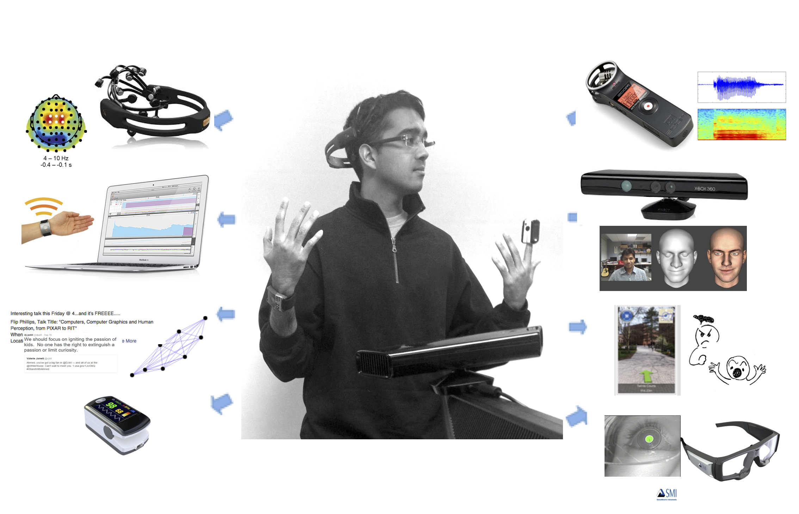

The National Science Foundation
Rochester Institute of Technology
The National Science Foundation
Rochester Institute of Technology
In statistical machine translation, bitext word alignment is the first step in translating text from one language to another. Alignment algorithms can establish meaningful relationships betweenobservers’ gaze data and their co-collected verbal image descriptions, for image annotation or classification. REU student researchers will (1) with widen the bi-modality alignment framework to new modalities, and (2) automatize transcription with speech recognition and explore alignment quality by factors such as concepts’ concreteness and specificity, domain, and individuals’ background knowledge.
Faculty mentors: Drs. Emily Prud’hommeaux and Cecilia Ovesdotter Alm
